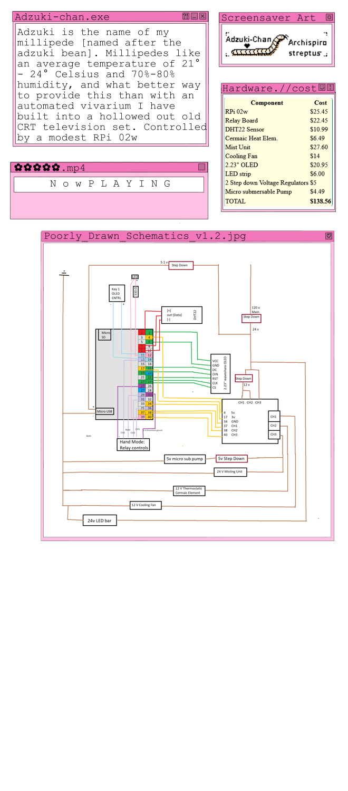

Adzuki-Chan Automated Vivarium

UNCOMPLETED: THIS IS A WORK IN PROGRESS
Introduction Adzuki-chan, my giant african millipede [named after the adzuki bean], prefers an average humidity of 70-80%. As well as an ambient air temperature of 21-24 deg C. And what better way to provide this than with an automated terrarium.

Hardware:
The case is a hollowed out old CRT television set that was sadly no longer functional. I got it for free, saved from going to the dump, and gutted it.
The brains of the operation is a Rpi 02W single board computer, where I have written a few python programs to interface with a DHT22 sensor and a 3 line electrical relay board.
Working with relays was a bit intimidating to me, because if you do any kind of research online about them you will find the consensus being DO NOT play with them if you don't know what youre doing.
Whcih is understandable as it is definitely how amatuers like myself wind up burning their house down lol. As scary as they can be, I felt semi-confident I could get it going since I've swapped some out
at my works water treatment plant PLC [big brain that controls the entire plant]. Other hardware components in this set up include an ultrasonic misting machine [marketed as a halloween decoration], a small 5v ceramic heating element. LED strip lighting. A 5v micropump to feed water to the mister. and lastly a small cooling fan for air circulation and to help with temperature
control. Another reason I felt ok experimenting with relays was that I got some DC-DC step down converters off of amazon to power all these devices, my highest volatage is the mister unit which is only 24 volts. If I was running mains volatage [120v] right out of the socket
I'm not so sure I would have done the same thing. Especially considering theres water involved lol. I also wired in a keyboard button for controlling a 32x128 pixel OLED screen. here is a little wiring diagram/pinout i drew in ms paint Software: Like I said before, everything is coded in python, which I really enjoy coding in. This was my first major python project and it had a few hiccups at the start, mostly with my ignorance in how to properly import a python library into virtual environments.
But once I got that mastered setting up each individual component, such as the sensor, the screen, and the relay, was a breeze. Ok thats a lie, setting up the OLED was a bit frusterating
because the one I purchased came as a "HAT" where they assumed you would mount it right onto the RPI. But I needed those precious GPIO pins for buttons and sensors and relays so I had to wire it myself using the SPI pins on the screen.
This in and of itself isnt difficult but finding the proper documentation for the screen online was tricky. After I got each component functioning in its own experimental script it was time for the main challange of the project. Incorporating each element of my code into one functional script.
As a novice it was tricky learning how to use "nested while loops" so that the computer would "listen" for a keypress at the same time as constantly monitoring humidity/temp, displaying it to the screen, and of course most important of all
properly controlling the relay and in turn the mister/fan/heater, all to give the perfect most ideal environment for Adzuki. Giant African Millipedes can live up to a whole decade in the right conditions which is amazing for an anthropod. Anyways thanks for reading, I'll include some pictures and some of my diagrams below. If anyone is curious or interested I can also send you my
python code. Just as long as you dont judge how messy and convoluted it probably is lol, if it works it works xD


Component
Cost
RPi 02w
$25.45
Relay Board
$22.45
DHT22 Sensor
$10.99
Cermaic Heat Elem.
$6.49
Mist Unit
$27.60
Cooling Fan
$14
2.23" OLED
$20.95
LED strip
$6.00
2 Step down Voltage Regulators
$10
Micro submersable Pump
$4.49
TOTAL
$143.56